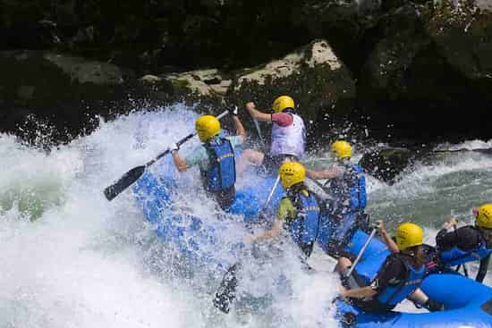

Our purpose to connect people with the raw power and beauty of wild rivers — turning first-time paddlers into lifelong river stewards. Mission To deliver safe, adrenaline-pumping whitewater adventures for families, friends, and thrill-seekers, led by certified guides who put safety, fun, and the river first. Creed Safety is the current that carries everything we do. Every rapid is a story worth telling. We respect the river — we leave no trace behind. Courage grows one paddle stroke at a time. Every guest paddles as part of the crew. Motto "Ride the Rapids.